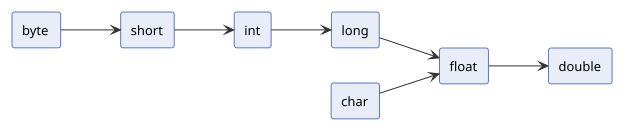
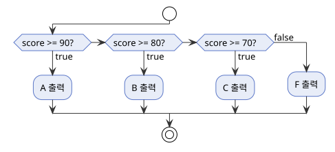
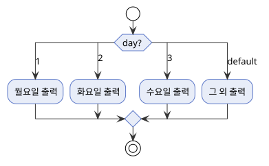
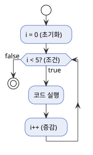
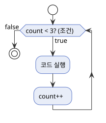
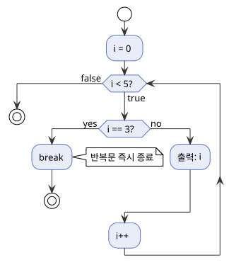
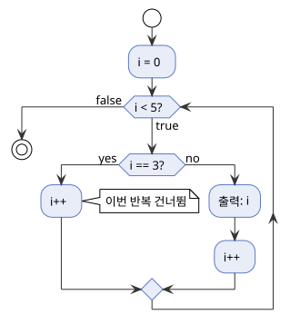

기본 문법
← Java로 돌아가기
1. 프로그램 구조
Java 프로그램은 class 안의 main 메서드에서 시작합니다.
| 용어 |
설명 |
| 메서드(method) |
특정 작업을 수행하는 코드 묶음. main 메서드는 프로그램 시작 시 자동으로 실행됩니다. |
class |
코드를 담는 그릇으로, 모든 코드는 반드시 class 안에 있어야 합니다. |
| public class Hello { // 클래스 이름은 파일명(Hello.java)과 반드시 같아야 합니다
public static void main(String[] args) { // 프로그램 시작 시 가장 먼저 실행되는 진입점
// 여기에 코드를 작성합니다
}
}
|
지금은 main 메서드 안에 코드를 작성한다는 것만 기억하면 됩니다.
2. 출력
System.out은 화면 출력을 담당하는 도구이고, println은 값을 출력하는 메서드 이름입니다. 줄 바꿈 여부에 따라 두 가지 메서드를 구분합니다.
2.1 println과 print
println은 출력 후 줄 바꿈을 추가하고, print는 줄 바꿈 없이 이어서 출력합니다.
| public class PrintExample {
public static void main(String[] args) {
System.out.println("Hello, World!"); // 출력 후 줄 바꿈
System.out.print("Hello"); // 줄 바꿈 없이 출력
System.out.print(", World!"); // 앞 줄과 이어짐
System.out.println(); // 줄 바꿈
System.out.println(42); // 정수, 실수, 논리값도 출력 가능
System.out.println(3.14);
System.out.println(true);
}
}
|
| Hello, World!
Hello, World!
42
3.14
true
|
3. 타입
타입은 저장할 수 있는 값의 종류와 크기를 정의합니다. Java의 타입은 기본 타입과 참조 타입으로 구분됩니다.
3.1 기본 타입 (Primitive Type)
값 자체를 직접 저장하는 8가지 타입입니다.
| 타입 |
종류 |
크기 |
기본값 |
범위 |
byte |
정수 |
1 byte |
0 |
-128 ~ 127 |
short |
정수 |
2 byte |
0 |
-32,768 ~ 32,767 |
int |
정수 |
4 byte |
0 |
약 -21억 ~ 21억 |
long |
정수 |
8 byte |
0L |
약 -922경 ~ 922경 |
float |
실수 |
4 byte |
0.0f |
소수점 약 7자리 |
double |
실수 |
8 byte |
0.0 |
소수점 약 15자리 |
char |
문자 |
2 byte |
'\0' |
0 ~ 65,535 (유니코드) |
boolean |
논리 |
1 byte |
false |
true / false |
접미사가 없으면 정수는 int, 실수는 double로 처리됩니다. long은 L, float은 f를 붙여 구분합니다 (예: 100L, 3.14f).
- 유니코드(Unicode) — 전 세계 문자를 하나의 숫자 번호로 표현하는 국제 표준입니다. 예:
'A'=65, '가'=44032.
3.2 참조 타입 (Reference Type)
객체를 가리키는 타입입니다. 기본 타입이 값 자체를 저장하는 것과 달리, 참조 타입은 객체가 있는 메모리 위치(주소)를 저장합니다. null을 가질 수 있습니다.
| 개념 |
설명 |
| 객체 |
데이터와 기능을 하나로 묶은 단위입니다. |
| 메모리 |
프로그램 실행 중 데이터를 저장하는 공간입니다. |
null |
아무것도 가리키지 않는 상태입니다. 기본 타입은 null을 가질 수 없습니다. |
참고
객체를 직접 정의하고 생성하는 방법은 클래스와 객체를 참고하세요.
4. 변수
변수는 값을 저장하는 메모리 공간에 붙인 이름입니다. 선언 시 타입을 명시합니다.
4.1 변수의 속성
변수는 세 가지 속성을 가집니다.
| 속성 |
설명 |
| 값(Value) |
변수에 저장된 실제 데이터입니다. |
| 크기(Size) |
타입마다 차지하는 메모리 크기가 다릅니다. |
| 주소(Address) |
값이 저장된 메모리 위치입니다. 참조 타입에서 중요하게 쓰입니다. |
4.2 변수의 선언과 초기화
선언은 타입과 변수명을 지정해 메모리 공간을 확보하고, 초기화는 선언된 변수에 처음 값을 할당하는 것입니다.
| public class VariableExample {
public static void main(String[] args) {
// 선언: 타입과 변수명만 지정
int age;
// 초기화: 선언 후 값 할당
age = 30;
// 선언 및 초기화: 선언과 동시에 값 할당
int count = 0;
double pi = 3.14159;
long population = 8_000_000_000L; // L: long 접미사 (int 범위 초과 시 필수), _는 숫자 가독성을 위한 구분자
char grade = 'A';
boolean isActive = true;
System.out.println(age); // 30
System.out.println(count); // 0
System.out.println(pi); // 3.14159
System.out.println(population); // 8000000000
System.out.println(grade); // A
System.out.println(isActive); // true
}
}
|
| 30
0
3.14159
8000000000
A
true
|
코드에 직접 쓴 값(예: 30, 3.14159, 'A')을 리터럴이라고 합니다.
참고
선언한 변수로 값을 계산하고 조합하는 방법은 9. 연산자를 참고하세요.
4.3 변수의 명명 규칙
변수명은 camelCase로 작성합니다. 첫 글자는 소문자이며, 이후 단어의 첫 글자를 대문자로 씁니다.
| public class NamingExample {
public static void main(String[] args) {
int maxRetryCount = 3;
boolean isActive = true;
System.out.println(maxRetryCount);
System.out.println(isActive);
}
}
|
5. String 클래스
String은 문자열을 저장하는 참조 타입입니다.
5.1 선언
큰따옴표(")로 감싼 문자열을 String 변수에 저장합니다.
| public class StringDeclareExample {
public static void main(String[] args) {
String name = "홍길동";
String greeting = "안녕하세요";
String empty = ""; // 빈 문자열
String nothing = null; // 아무것도 가리키지 않는 상태
System.out.println(name); // 홍길동
System.out.println(greeting); // 안녕하세요
}
}
|
5.2 주요 메서드
String은 문자열을 다루는 메서드를 제공합니다. 변수명.메서드명() 형태로 호출합니다.
참고
지금은 호출 형태만 익히고, 메서드에 대한 자세한 내용은 14. 메서드를 참고하세요.
| 메서드 |
반환 타입 |
설명 |
length() |
int |
문자열 길이를 반환합니다. |
charAt(index) |
char |
특정 위치의 문자를 반환합니다. 인덱스는 0부터 시작합니다. |
substring(start, end) |
String |
start부터 end 직전까지의 부분 문자열을 반환합니다. |
toUpperCase() |
String |
모든 문자를 대문자로 변환합니다. |
toLowerCase() |
String |
모든 문자를 소문자로 변환합니다. |
contains(str) |
boolean |
특정 문자열이 포함되면 true를 반환합니다. |
| public class StringMethodExample {
public static void main(String[] args) {
String word = "Hello";
System.out.println(word.length()); // 5
System.out.println(word.charAt(0)); // H
System.out.println(word.substring(1, 3)); // el
System.out.println(word.toUpperCase()); // HELLO
System.out.println(word.toLowerCase()); // hello
}
}
|
참고
+를 이용한 문자열 연결과 equals()를 이용한 비교는 9. 연산자를 참고하세요.
6. 상수
상수는 final 키워드로 선언한 변수로, 최초 초기화 이후 값을 변경할 수 없습니다.
6.1 선언과 초기화
변수 선언 앞에 final을 붙이면 상수가 됩니다. 선언과 동시에 초기화해야 하며, 이후 재할당을 시도하면 오류가 발생합니다.
| public class ConstantExample {
public static void main(String[] args) {
final int MAX_SIZE = 100;
final double PI = 3.14159;
final String APP_NAME = "MyApp";
System.out.println(MAX_SIZE); // 100
System.out.println(PI); // 3.14159
System.out.println(APP_NAME); // MyApp
}
}
|
참고
static final을 사용한 클래스 범위 상수는 클래스와 객체를 참고하세요.
6.2 명명 규칙
상수명은 UPPER_SNAKE_CASE로 작성합니다. 변수의 camelCase와 구분하기 위해 모든 글자를 대문자로 쓰고, 단어 사이는 언더스코어(_)로 구분합니다.
| public class ConstantNamingExample {
public static void main(String[] args) {
final int MAX_RETRY_COUNT = 3;
final double DEFAULT_TIMEOUT = 30.0;
final String BASE_URL = "https://api.example.com";
System.out.println(MAX_RETRY_COUNT); // 3
System.out.println(DEFAULT_TIMEOUT); // 30.0
System.out.println(BASE_URL); // https://api.example.com
}
}
|
| 3
30.0
https://api.example.com
|
7. 입력
키보드로 입력받으려면 Scanner를 사용합니다.
7.1 선언과 사용
new Scanner(System.in)으로 Scanner를 만든 뒤, 타입에 맞는 메서드로 값을 읽습니다.
| import java.util.Scanner; // Scanner를 사용하기 위해 필요한 선언
public class InputExample {
public static void main(String[] args) {
Scanner scanner = new Scanner(System.in);
System.out.print("이름 입력: ");
String name = scanner.nextLine();
System.out.println("안녕, " + name);
scanner.close();
}
}
|
7.2 주요 메서드
Scanner는 입력을 읽는 메서드를 제공합니다. 변수명.메서드명() 형태로 호출합니다.
참고
지금은 호출 형태만 익히고, 메서드에 대한 자세한 내용은 14. 메서드를 참고하세요.
| 메서드 |
반환 타입 |
설명 |
nextInt() |
int |
정수 1개를 읽음 |
nextDouble() |
double |
실수 1개를 읽음 |
next() |
String |
공백 기준 단어 1개를 읽음 |
nextLine() |
String |
줄 바꿈까지 한 줄을 읽음 |
close() |
void |
사용이 끝난 Scanner를 닫아 자원을 반환함. 사용 후 닫는 것이 관례 |
8. 타입 캐스팅
타입 캐스팅은 하나의 타입을 다른 타입으로 변환하는 것입니다. 묵시적 변환(widening)과 명시적 변환(narrowing)으로 구분됩니다.
8.1 묵시적 변환 (Widening)
작은 타입에서 큰 타입으로 자동 변환됩니다. 데이터 손실이 없으므로 별도 문법 없이 컴파일러가 처리합니다.

| public class WideningExample {
public static void main(String[] args) {
int intValue = 100;
long longValue = intValue; // 자동 변환
double doubleValue = intValue; // 자동 변환
System.out.println(longValue); // 100
System.out.println(doubleValue); // 100.0
}
}
|
8.2 명시적 변환 (Narrowing)
큰 타입에서 작은 타입으로 변환할 때는 데이터 손실 가능성이 있으므로 변환할 타입을 (타입명) 형태로 직접 명시해야 합니다. 이를 캐스트 연산자라고 합니다.
| public class NarrowingExample {
public static void main(String[] args) {
double doubleValue = 9.99;
int intValue = (int) doubleValue; // (int): double → int로 변환
int big = 300;
byte byteValue = (byte) big; // (byte): int → byte로 변환
System.out.println(intValue); // 9
System.out.println(byteValue); // 44
}
}
|
9. 연산자
연산자는 값을 계산하거나 비교·조합할 때 사용하는 기호입니다.
9.1 산술 연산자
두 수를 계산해 결과값을 반환합니다.
| 연산자 |
의미 |
+ |
왼쪽 값과 오른쪽 값을 더한 값을 반환합니다. |
- |
왼쪽 값에서 오른쪽 값을 뺀 값을 반환합니다. |
* |
왼쪽 값과 오른쪽 값을 곱한 값을 반환합니다. |
/ |
왼쪽 값을 오른쪽 값으로 나눈 몫을 반환합니다. 정수끼리는 소수점을 버립니다. |
% |
왼쪽 값을 오른쪽 값으로 나눈 나머지를 반환합니다. |
| public class ArithmeticExample {
public static void main(String[] args) {
int number1 = 10;
int number2 = 3;
int sum = number1 + number2;
int diff = number1 - number2;
int product = number1 * number2;
int quotient = number1 / number2;
int remainder = number1 % number2;
System.out.println(sum); // 13
System.out.println(diff); // 7
System.out.println(product); // 30
System.out.println(quotient); // 3
System.out.println(remainder); // 1
}
}
|
9.2 대입 연산자
변수에 값을 할당합니다.
| 연산자 |
의미 |
= |
오른쪽 값을 왼쪽 변수에 할당합니다. |
+= |
변수에 오른쪽 값을 더한 뒤 할당합니다. |
-= |
변수에서 오른쪽 값을 뺀 뒤 할당합니다. |
*= |
변수에 오른쪽 값을 곱한 뒤 할당합니다. |
/= |
변수를 오른쪽 값으로 나눈 몫을 할당합니다. |
%= |
변수를 오른쪽 값으로 나눈 나머지를 할당합니다. |
| public class AssignmentExample {
public static void main(String[] args) {
int count = 10;
count += 5;
System.out.println(count); // 15
count -= 3;
System.out.println(count); // 12
count *= 2;
System.out.println(count); // 24
count /= 4;
System.out.println(count); // 6
count %= 4;
System.out.println(count); // 2
}
}
|
9.3 비교 연산자
두 값을 비교해 boolean을 반환합니다.
| 연산자 |
의미 |
== |
두 값이 같으면 true를 반환합니다. |
!= |
두 값이 다르면 true를 반환합니다. |
< |
왼쪽 값이 오른쪽 값보다 작으면 true를 반환합니다. |
> |
왼쪽 값이 오른쪽 값보다 크면 true를 반환합니다. |
<= |
왼쪽 값이 오른쪽 값보다 작거나 같으면 true를 반환합니다. |
>= |
왼쪽 값이 오른쪽 값보다 크거나 같으면 true를 반환합니다. |
| public class ComparisonExample {
public static void main(String[] args) {
int number1 = 10;
int number2 = 3;
System.out.println(number1 == number2); // false
System.out.println(number1 != number2); // true
System.out.println(number1 < number2); // false
System.out.println(number1 > number2); // true
System.out.println(number1 <= number2); // false
System.out.println(number1 >= number2); // true
}
}
|
| false
true
false
true
false
true
|
9.4 논리 연산자
두 boolean 값을 조합해 하나의 boolean을 반환합니다.
| 연산자 |
의미 |
&& |
두 값이 모두 true이면 true를 반환합니다. |
\|\| |
두 값 중 하나라도 true이면 true를 반환합니다. |
! |
true는 false로, false는 true로 반환합니다. |
&&는 왼쪽이 false이면 오른쪽을 확인하지 않고, ||는 왼쪽이 true이면 오른쪽을 확인하지 않습니다.
| public class LogicalExample {
public static void main(String[] args) {
boolean a = true;
boolean b = false;
System.out.println(a && b); // false
System.out.println(a || b); // true
System.out.println(!a); // false
}
}
|
9.5 증감 연산자
변수의 값을 1씩 증가하거나 감소시킵니다.
| 연산자 |
의미 |
++x |
변수를 1 증가시킨 뒤 값을 반환합니다. |
x++ |
현재 값을 반환한 뒤 변수를 1 증가시킵니다. |
--x |
변수를 1 감소시킨 뒤 값을 반환합니다. |
x-- |
현재 값을 반환한 뒤 변수를 1 감소시킵니다. |
| public class IncrementExample {
public static void main(String[] args) {
int x = 5;
System.out.println(x++); // 5 (현재 값 출력 후 증가 → x = 6)
System.out.println(++x); // 7 (증가 후 출력 → x = 7)
}
}
|
9.6 삼항 연산자
조건에 따라 두 값 중 하나를 반환합니다.
| 형태 |
의미 |
조건 ? A : B |
조건이 true이면 A, false이면 B를 반환합니다. |
| public class TernaryExample {
public static void main(String[] args) {
int score = 75;
String result = (score >= 60) ? "합격" : "불합격";
System.out.println(result);
}
}
|
9.7 String 연산
String은 숫자 타입과 달리 +로 이어 붙이고, 내용 비교에는 equals()를 사용합니다.
문자열 연결
| 형태 |
의미 |
+ |
두 문자열을 이어 붙입니다. 다른 타입과 연결하면 자동으로 문자열로 변환됩니다. |
| public class StringConcatExample {
public static void main(String[] args) {
String name = "지수";
int age = 25;
System.out.println("이름: " + name);
System.out.println("나이: " + age);
System.out.println(name + "님은 " + age + "살");
}
}
|
문자열 비교
| 형태 |
의미 |
a.equals(b) |
두 문자열의 내용이 같은지 비교합니다. |
a == b |
두 변수가 같은 객체를 가리키는지 비교합니다. 내용이 같아도 false가 나올 수 있습니다. |
| public class StringEqualsExample {
public static void main(String[] args) {
String a = "hello";
String b = new String("hello");
System.out.println(a.equals(b));
System.out.println(a == b);
}
}
|
10. 조건문
조건식의 결과에 따라 실행할 코드 블록을 선택합니다.
10.1 if / else if / else
조건이 true인 블록을 순서대로 찾아 실행하고, 나머지는 건너뜁니다.
| 형태 |
의미 |
if (조건) |
조건이 true이면 블록을 실행합니다. |
else if (조건) |
위 조건이 false이고 이 조건이 true이면 실행합니다. |
else |
위의 모든 조건이 false이면 실행합니다. |

| public class IfExample {
public static void main(String[] args) {
int score = 75;
if (score >= 90) {
System.out.println("A");
} else if (score >= 80) {
System.out.println("B");
} else if (score >= 70) {
System.out.println("C");
} else {
System.out.println("F");
}
}
}
|
10.2 switch
하나의 값을 여러 case와 비교하여 일치하는 블록을 실행합니다.
| 형태 |
의미 |
case 값: |
값이 일치하면 이 블록부터 실행합니다. |
break |
현재 case 블록을 끝내고 switch를 빠져나옵니다. |
default: |
일치하는 case가 없을 때 실행합니다. |
break를 생략하면 다음 case까지 실행이 계속됩니다(fall-through).

| public class SwitchExample {
public static void main(String[] args) {
int day = 3;
switch (day) {
case 1:
System.out.println("월요일");
break;
case 2:
System.out.println("화요일");
break;
case 3:
System.out.println("수요일");
break;
default:
System.out.println("그 외");
}
}
}
|
11. 반복문
조건이 만족되는 동안 코드 블록을 반복 실행합니다.
11.1 for
반복 횟수가 정해진 경우에 사용합니다. for 뒤 괄호 안에 초기화·조건·증감식을 한 줄로 작성합니다.
| 구성 요소 |
의미 |
| 초기화 |
반복 시작 전 한 번만 실행합니다. (예: int i = 0) |
| 조건 |
매 반복 전에 확인하며, false가 되면 반복을 멈춥니다. (예: i < 5) |
| 증감식 |
매 반복이 끝난 뒤 실행됩니다. (예: i++) |

| public class ForExample {
public static void main(String[] args) {
for (int i = 0; i < 5; i++) {
System.out.println(i);
}
}
}
|
11.2 while
조건이 true인 동안 반복합니다. 반복 횟수를 사전에 알 수 없을 때 사용합니다.
| 구성 요소 |
의미 |
| 조건 |
매 반복 전에 확인하며, false가 되면 반복을 멈춥니다. (예: count < 3) |

| public class WhileExample {
public static void main(String[] args) {
int count = 0;
while (count < 3) {
System.out.println(count);
count++;
}
}
}
|
11.3 break와 continue
반복문 실행 중 흐름을 제어합니다.
| 키워드 |
동작 |
break |
반복문 전체를 즉시 종료합니다. |
continue |
이번 반복의 남은 코드를 건너뛰고 다음 반복으로 이동합니다. |
break 예시 — i가 3이 되는 순간 반복문을 종료합니다.

| public class BreakExample {
public static void main(String[] args) {
for (int i = 0; i < 5; i++) {
if (i == 3) break;
System.out.println(i);
}
}
}
|
continue 예시 — i가 3일 때만 건너뛰고 나머지는 출력합니다.

| public class ContinueExample {
public static void main(String[] args) {
for (int i = 0; i < 5; i++) {
if (i == 3) continue;
System.out.println(i);
}
}
}
|
12. 배열
배열은 같은 타입의 값을 순서대로 묶어 보관하는 자료구조입니다. 선언할 때 크기가 고정됩니다.
12.1 선언과 초기화
타입 뒤에 []를 붙여 선언하며, new 키워드로 크기를 지정하거나 중괄호로 초기값을 직접 지정합니다.
| public class ArrayExample {
public static void main(String[] args) {
// 크기 지정: 숫자 타입은 0으로 초기화
int[] scores = new int[5];
// 초기값 직접 지정
int[] primes = {2, 3, 5, 7, 11};
String[] days = {"월", "화", "수", "목", "금"};
System.out.println(scores[0]); // 기본값: 0
System.out.println(primes[0]); // 2
System.out.println(days[0]); // 월
}
}
|
12.2 원소 접근과 수정
배열에 담긴 각 값을 원소라 하며, 인덱스로 접근합니다.
| 용어 |
설명 |
| 원소 |
배열에 담긴 각각의 값 |
| 인덱스 |
원소의 위치를 나타내는 번호. 0부터 시작하며 마지막은 length - 1 |
존재하지 않는 인덱스를 사용하면 프로그램 실행 중 오류가 발생합니다.
| public class ArrayAccessExample {
public static void main(String[] args) {
int[] scores = {90, 85, 70, 95, 60};
System.out.println(scores[0]); // 90 (첫 번째)
System.out.println(scores[4]); // 60 (마지막, length - 1)
System.out.println(scores.length); // 5
scores[2] = 75; // 세 번째 원소 수정
System.out.println(scores[2]); // 75
}
}
|
12.3 배열 순회
인덱스 기반 for문 또는 for-each문으로 모든 원소를 순회합니다. for-each는 for (타입 변수 : 배열) 형태로, 인덱스 없이 값만 꺼낼 때 사용합니다.
| 방식 |
용도 |
for (int i = 0; i < arr.length; i++) |
인덱스가 필요하거나 원소를 수정할 때. |
for (int n : arr) |
값만 읽을 때. |
| public class ArrayLoopExample {
public static void main(String[] args) {
int[] numbers = {10, 20, 30, 40, 50};
// 인덱스 기반 순회
for (int i = 0; i < numbers.length; i++) {
System.out.println(i + ": " + numbers[i]);
}
// for-each 순회
for (int n : numbers) {
System.out.println(n);
}
}
}
|
| 0: 10
1: 20
2: 30
3: 40
4: 50
10
20
30
40
50
|
13. 다차원 배열
배열의 원소가 다시 배열인 구조입니다. 행(row)과 열(column)로 데이터를 표현할 때 사용합니다.
13.1 2차원 배열 선언과 초기화
타입[][] 변수명 형태로 선언하고, 중첩 중괄호로 초기화합니다.
| 방법 |
예시 |
설명 |
| 크기 지정 |
new int[3][4] |
3행 4열, 기본값 0으로 초기화. |
| 값 지정 |
{ {1,2}, {3,4} } |
선언과 동시에 값 할당. |
| public class TwoDimArrayExample {
public static void main(String[] args) {
int[][] grid = new int[3][4]; // 3행 4열, 기본값 0
int[][] matrix = { {1, 2}, {3, 4} }; // 2행 2열
System.out.println(grid[0][0]); // 0
System.out.println(matrix[0][1]); // 2
System.out.println(matrix[1][0]); // 3
}
}
|
13.2 2차원 배열 순회
중첩 for문으로 행과 열을 순서대로 접근합니다.
| public class TwoDimLoopExample {
public static void main(String[] args) {
int[][] matrix = {
{1, 2, 3},
{4, 5, 6},
{7, 8, 9}
};
for (int row = 0; row < matrix.length; row++) {
for (int col = 0; col < matrix[row].length; col++) {
System.out.print(matrix[row][col] + " ");
}
System.out.println();
}
}
}
|
14. 메서드
메서드는 이름이 붙은 코드 블록입니다. 한 번 선언하면 여러 곳에서 반복 호출할 수 있어 코드 중복을 줄입니다.
14.1 선언과 호출
선언은 반환 타입 → 이름 → 매개변수 순으로 작성합니다. 반환할 값이 없으면 반환 타입으로 void를 씁니다. 호출은 이름 뒤에 ()를 붙입니다.
| public class MethodExample {
static void sayHello() { // void: 반환값 없음
System.out.println("안녕하세요!");
}
public static void main(String[] args) {
sayHello(); // 안녕하세요!
sayHello(); // 안녕하세요!
}
}
|
참고
main과 같은 클래스에서 객체 없이 직접 호출하려면 static이어야 합니다. 자세한 내용은 클래스와 객체를 참고하세요.
14.2 매개변수
매개변수는 메서드를 선언할 때 지정하는 변수 이름이고, 인수는 호출할 때 실제로 전달하는 값입니다. 여러 개는 ,로 구분합니다.
| public class ParamExample {
static void greet(String name, int age) { // name, age: 매개변수
System.out.println(name + "님은 " + age + "살입니다.");
}
public static void main(String[] args) {
greet("지수", 25); // "지수", 25: 인수
greet("민준", 30);
}
}
|
| 지수님은 25살입니다.
민준님은 30살입니다.
|
14.3 반환값
값을 돌려줄 때는 반환 타입을 지정하고 return으로 값을 반환합니다.
| 구분 |
반환 타입 |
return |
| 반환값 없음 |
void |
생략함. |
| 반환값 있음 |
int, String 등 |
반드시 작성. |
| public class ReturnExample {
static int add(int a, int b) {
return a + b;
}
public static void main(String[] args) {
int result = add(3, 4);
System.out.println(result); // 7
}
}
|
{kind=link}
{kind=link}
{kind=link}
{kind=link}
{kind=link}
{kind=link}
{kind=link}